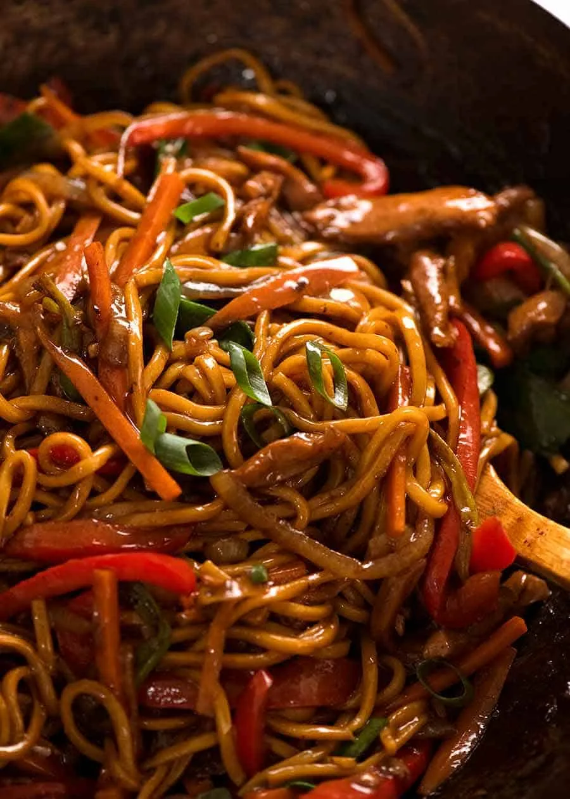

Lo Mein

Description
Lo Mein is a popular Chinese noodle dish that's both flavorful and versatile. This quick and easy recipe combines chewy egg noodles with a savory sauce and a variety of vegetables and protein.
It's perfect for a weeknight dinner or as a delicious alternative to takeout. The beauty of Lo Mein lies in its adaptability – you can easily customize it with your favorite vegetables or protein choices.
Ingredients
- 8 oz egg noodles
- 2 tbsp vegetable oil
- 2 cloves garlic, minced
- 1 cup sliced mushrooms
- 1 cup julienned carrots
- 1 cup sliced bok choy
- 1 cup bean sprouts
- 1/2 cup sliced green onions
- 1/2 lb protein of choice (chicken, beef, shrimp, or tofu)
Sauce
- 3 tbsp soy sauce
- 1 tbsp oyster sauce
- 1 tsp sesame oil
- 1 tsp sugar
- 1/4 tsp white pepper
Steps
- Cook the egg noodles according to package instructions. Drain and set aside.
- In a small bowl, mix all the sauce ingredients together. Set aside.
- Heat vegetable oil in a large wok or skillet over medium-high heat.
- Add minced garlic and stir-fry for 30 seconds until fragrant.
- Add your chosen protein and cook until nearly done.
- Add mushrooms, carrots, and bok choy. Stir-fry for 2-3 minutes until vegetables start to soften.
- Add the cooked noodles, bean sprouts, and the prepared sauce to the wok.
- Toss everything together, ensuring the noodles and vegetables are evenly coated with the sauce.
- Cook for an additional 2-3 minutes, stirring constantly.
- Remove from heat and garnish with sliced green onions.
- Serve hot and enjoy your homemade Lo Mein!